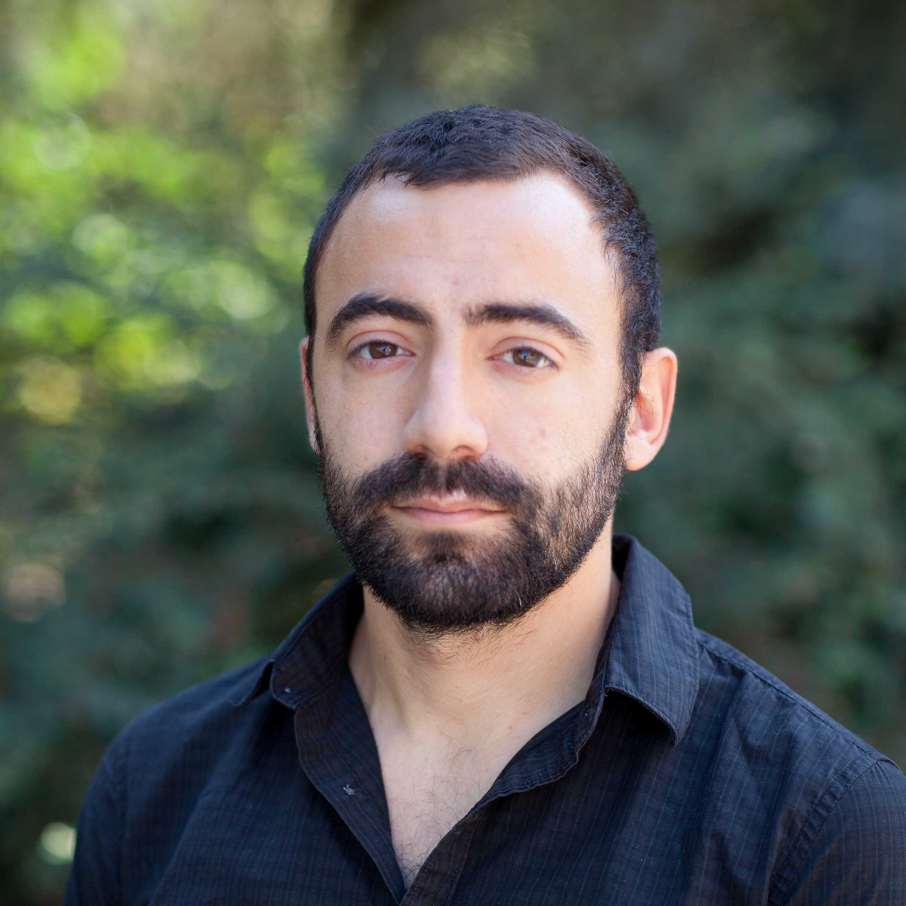

Team
George Mason University

Antonios Anastasopoulos
Principal Investigator
Assistant Professor, CS
antonisa.github.io
University of Washington
William D. Lewis
Co-Principal Investigator
Affiliate Asst. Professor, Linguistics
faculty.uw.edu/wlewis2